การเขียนโปรแกรม Arduino สำหรับ ATtiny85#
บทความนี้นำเสนอการใช้งานชิปไมโครคอนโทรลเลอร์ ATtiny85 (8-bit MCU) การเขียนโปรแกรมด้วยคำสั่งของ Arduino การจำลองการทำงานและการทดลองใช้งานกับอุปกรณ์จริง
Keywords: ATtiny85, Arduino Programming, AUTODESK Tinkercad Circuits, Wokwi AVR Simulator, Breadboard Prototyping
▷ แนะนำไมโครคอนโทรลเลอร์ ATtiny85#
คุณสมบัติเกี่ยวกับ ATtiny85 (Datasheet)
- เป็นชิปไมโครคอนโทรลเลอร์ในตระกูล ATtiny (TinyAVR) ของบริษัท Atmel / Microchip
- ภายในมีซีพียูขนาด 8 บิต และมีสถาปัตยกรรมแบบ RISC
- มีหน่วยความจำภายใน 3 ประเภท
- SRAM (Data Memory) ขนาด 512 ไบต์
- Flash (Program Memory) ขนาด 8 กิโลไบต์ (KB)
- EEPROM (Non-volatile Data Storage) ขนาด 512 ไบต์
- ใช้ตัวถังของไอซีที่มีเพียง 8 ขา เช่น ตัวถังแบบ DIP-8 (สามารถเสียบขาลงบนเบรดบอร์ดได้)
- มีตัวสร้างสัญญาณ Clock ภายใน (Internal Oscillator) ที่มีความถี่ 8 MHz
- รองรับช่วงแรงดันไฟเลี้ยง 1.8V ~ 5.5V ได้
- มีขา GPIO ทั้งหมด 6 ขา ซึ่งเป็นส่วนหนึ่งของพอร์ต PORTB
- สามารถสร้างสัญญาณ PWM (Pulse Width Modulation) ได้สูงสุด 4 ช่อง
- มีวงจร UCI (Universal Serial Interface) จำนวน 1 ชุด ที่สามารถใช้งานสำหรับ SPI, I2C/TWI และ UART ได้
- มีวงจรตัวนับ Timers/ Counters ขนาด 8 บิต จำนวน 2 ชุด
- มีวงจร 10-bit ADC (Analog-to-Digital Converter) ที่รับอินพุตแบบ Single-Ended จำนวน 4 ช่อง (ADC0..ADC3) หรือแบบ Differential Pair ได้ 2 คู่
- มีวงจร On-chip Analog Comparator และขาอินพุต AIN0(+) กับ AIN1(-) จำนวน 1 ช่อง
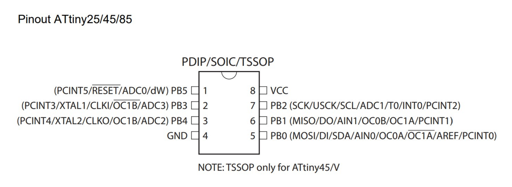
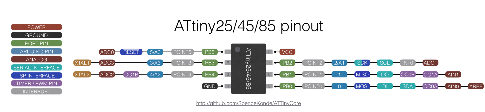
รูป: ผังแสดงตำแหน่งขาของ ATtiny85 ที่มีตัวถังแบบ Plastic DIP-8 / SOIC-8
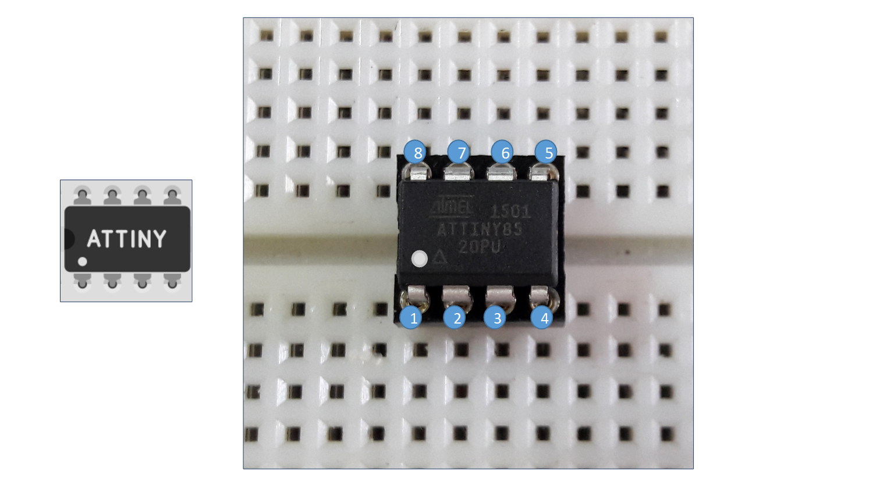
รูป: ชิป ATtiny85-20PU ที่มีตัวถังแบบ PDIP-8 และเสียบขาลงใน Round-pin IC Socket สำหรับการต่อวงจรบนเบรดบอร์ด
ทำไมจึงแนะนำให้ลองใช้ ATtiny85 ?
- ATtiny85 มีราคาไม่แพง (~50 บาท)
- มีตัวถังแบบ DIP-8 (เหมือนไอซี OpAmp ทั่วไป) ให้เลือกใช้ และสามารถนำไปเสียบลงบนเบรดบอร์ดเพื่อต่อวงจรทดลองได้ง่าย
- สามารถใช้ตัวสร้างสัญญาณ Clock ภายใน โดยไม่ต้องต่อวงจร Crystal Oscillator ภายนอก (ไม่ต้องใช้ขา XTAL1 / XTAL2)
- มีตัวเลือกสำหรับความถี่ เช่น 1 MHz / 8 MHz / 16 MHz
- ถ้าใช้ความถี่ 16 MHz จะต้องใช้แรงดันไฟเลี้ยง +5V
- ถ้าใช้ความถี่ 1 MHz หรือ 8 MHz สามารถเลือกใช้แรงดันไฟเลี้ยง 3.3V หรือ 5V ได้
- สามารถใช้งานได้กับซอฟต์แวร์ AUTODESK Tinkercad Circuits (Web-based) — ผู้ใช้สามารถเขียนโค้ดและจำลองการทำงานร่วมกับวงจรอิเล็กทรอนิกส์ได้ รองรับการเขียนโค้ด โดยใช้ชุดคำสั่งของ Arduino API หรือจะเขียนโค้ดโดยใช้ฟังก์ชันจากไลบรารี AVR libc ได้
- สามารถเขียนโค้ดและจำลองการทำงานโดยใช้ Wokwi Arduino Simulator ได้
- สามารถเขียนโค้ดโดยใช้ Arduino IDE สำหรับการคอมไพล์โค้ดและนำไปใช้กับฮาร์ดแวร์จริง
อย่างไรก็ตาม ก็ต้องคำนึงถึงข้อจำกัดของ ATtiny MCU เมื่อต้องการนำไปใช้งาน เช่น ขนาดของหน่วยความจำที่มีค่อนข้างน้อย จำนวนของขา I/O ที่มีอย่างจำกัด เป็นต้น
การใช้ซอฟต์แวร์ Tinkercad Circuits มีข้อดีคือ ผู้ใช้สามารถเลือกใช้ชิป ATtiny85 มาต่อวงจรเสมือนจริงบนเบรดบอร์ด ร่วมกับไอซีหรือวงจรอิเล็กทรอนิกส์ที่มีอยู่ในรายการของตัวเลือก และจำลองการทำงานได้จริง ช่วยในการฝึกทักษะการวางแผนต่อวงจรบนเบรดบอร์ด
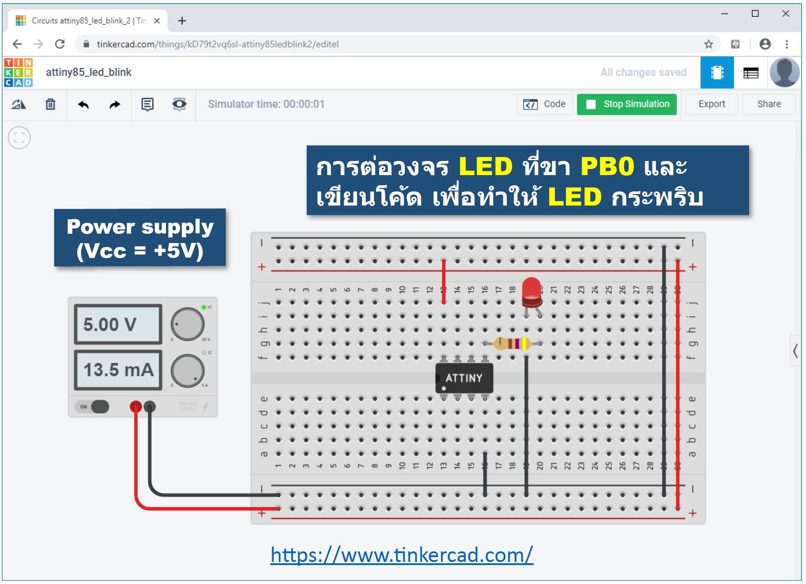
รูป: การต่อวงจรเสมือนจริง โดยใช้ LED + 470R สำหรับแสดงสถานะลอจิก แสดงสถานะลอจิกที่ขา PB0 เขียนโค้ดด้วย Arduino Sketch เพื่อกำหนดสถานะลอจิกที่ขาเอาต์พุต และจำลองการทำงานด้วย Tinkercad Circuits
ข้อสังเกต:
- ในการต่อวงจรโดยใช้ Tinkercad Circuits เพื่อจำลองการทำงานของ ATtiny85 จะต้องมีการต่อขาไฟเลี้ยง +5V และ 0V สำหรับไอซี (จากแหล่งจ่ายคงที่ภายนอกหรือ Power Supply) ที่ขา 8 และขา 4 ตามลำดับ
- ภายในชิป ATtiny85 ที่ขารีเซต มีตัวต้านทานแบบ Internal Pullup (30kΩ ~ 60kΩ) ดังนั้นสำหรับการต่อวงจรทดลองโดยทั่วไป ก็ไม่จำเป็นต้องต่อตัวต้านทาน Pullup ภายนอกเพิ่ม
- โดยทั่วไป ฟังก์ชันการทำงานของขารีเซต จะไม่ถูกปิดการใช้งาน ดังนั้นจึงไม่สามารถใช้ขารีเซตเป็นขา GPIO ทั่วไปได้
ยกเว้นกรณีที่มีการโปรแกรมค่าของ Fuse Bit (บิต
RSTDISBLใน Fuse High Byte) เพื่อปิดการใช้งานฟังก์ชันรีเซต (Disabling Reset Pin) แต่จะทำให้ไม่สามารถอัปโหลดโปรแกรมด้วยวิธี ICSP ได้อีกต่อไป ดังนั้นจะต้องใช้อุปกรณ์ที่เรียกว่า High-Voltage AVR Programmer เพื่อเปิดใช้งานฟังก์ชันของขารีเซตอีกครั้ง - ในการต่อวงจรโดยใช้ไอซี ATtiny85 บนเบรดบอร์ด แนะนำให้ใช้ IC Socket ร่วมด้วย เพื่อช่วยป้องกันขาของไอซี เมื่อต้องถอดไอซีออกจากเบรดบอร์ดบ่อยครั้ง
ในเชิงเปรียบเทียบหรืออีกตัวเลือกหนึ่งคือ การใช้ซอฟต์แวร์ WokWi (ออกเสียงว่า "ว็อก-วี") เพื่อนำมาต่อวงจร ATtiny85 ร่วมกับโมดูลหรืออุปกรณ์อิเล็กทรอนิกส์ต่าง ๆ ที่มีอยู่ในรายการตัวเลือกได้ แต่ก็มีความแตกต่างจาก Tinkercad Circuits เช่น ประเภทของอุปกรณ์ที่เลือกใช้ได้ และยังไม่สามารถต่อวงจรเสมือนจริงบนเบรดบอร์ดได้
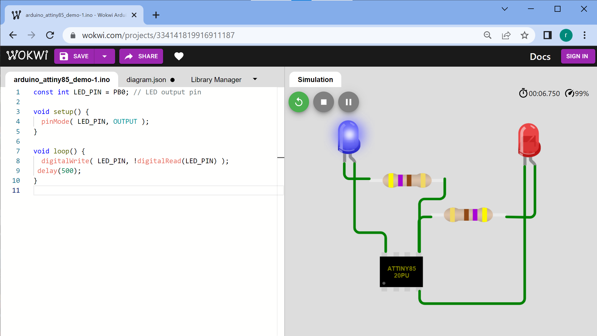
รูป: การต่อวงจรเสมือนจริง โดยใช้ LEDs (Red & Blue Color) + 470R แสดงสถานะลอจิกที่ขา PB0 (IC Pin 5) เขียนโค้ดด้วย Arduino Sketch เพื่อกำหนดสถานะลอจิกที่ขาเอาต์พุต (LED สีแดงกับสีน้ำเงินจะติด-ดับสลับกัน) และจำลองการทำงานด้วย WokWi Simulator
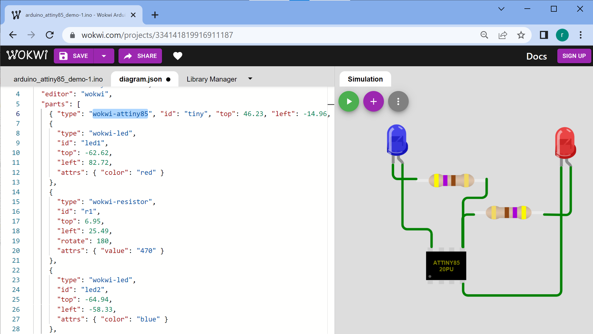
รูป: ไฟล์ diagram.json ของวงจรตัวอย่าง และการกำหนดค่าของคุณสมบัติที่เกี่ยวข้องกับอุปกรณ์ที่ได้นำมาต่อวงจร
(เช่น ค่าของตัวต้านทาน wokwi-resistor สีของหลอดแอลอีดี wokwi-led เป็นต้น)
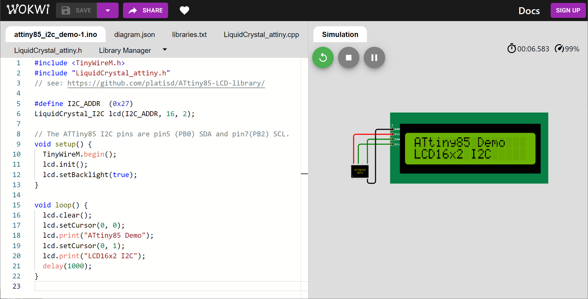
รูป: ตัวอย่างการใช้โมดูล LCD16X2 I2C ร่วมกับ ATtiny85 และจำลองการทำงานด้วย WokWi Simulator
ข้อสังเกต:
- การต่อวงจรโดยใช้ ** WokWi Simulator เพื่อจำลองการทำงานของ ATtiny85 ไม่จำเป็นต้องต่อขาไฟเลี้ยง +5V และ 0V ที่ขา 8 และขา 4** ตามลำดับ
ถัดไปเป็นตัวอย่างโค้ด Arduino Sketch สาธิตการใช้คำสั่งพื้นฐาน เช่น pinMode(),
delay(), digitalWrite(), digitalRead(), analogWrite()
ตัวอย่างโค้ด: LED Blink โดยเลือกใช้ขา PB0 เป็นขาเอาต์พุต
const int LED_PIN = PB0; // PB0 pin = Arduino D0 pin
void setup() {
pinMode( LED_PIN, OUTPUT );
}
void loop() {
// toggle LED output
digitalWrite( LED_PIN, !digitalRead(LED_PIN) );
delay(500);
}
ตัวอย่างโค้ด: PWM-based LED Fading โดยเลือกใช้ขา PB0 เป็นขาเอาต์พุต
const int LED_PIN = PB0; // LED output pin
void setup() {
analogWrite( LED_PIN, 0 );
}
void loop() {
for ( int i=0; i < 512; i++ ) {
if ( i <= 255 ) {
analogWrite( LED_PIN, i );
} else {
analogWrite( LED_PIN, 511-i );
}
delay(8);
}
}
▷ การเขียนโปรแกรมด้วย Arduino IDE สำหรับ ATtiny85#
ถ้าต้องการนำโค้ด Arduino Sketch ไปใช้งานกับอุปกรณ์จริง จะต้องมีการคอมไพล์โค้ดให้เป็นไฟล์เฟิร์มแวร์ (.bin) และผู้ใช้สามารถคอมไพล์โค้ดโดยใช้ซอฟต์แวร์ Arduino IDE แต่จะต้องมีการติดตั้ง Arduino TinyCore
ในส่วน Preferences ของ Arduino IDE ให้ใส่ URL ต่อไปนี้ เพิ่มอีกหนึ่งบรรทัดสำหรับ Additional Boards Manager (ถ้ามีรายการ URL อื่นอีก ให้ใช้สัญลักษณ์ , เป็นตัวแบ่ง)
http://drazzy.com/package_drazzy.com_index.json
จากนั้นให้ทำคำสั่งจากเมนู Tools > Boards Manager เพื่อดาวน์โหลดและติดตั้ง ATTinyCore ซึ่งได้รับการดูแลโดย Spence Konde ตามรูปตัวอย่าง (ใช้เวอร์ชัน 1.5.2)
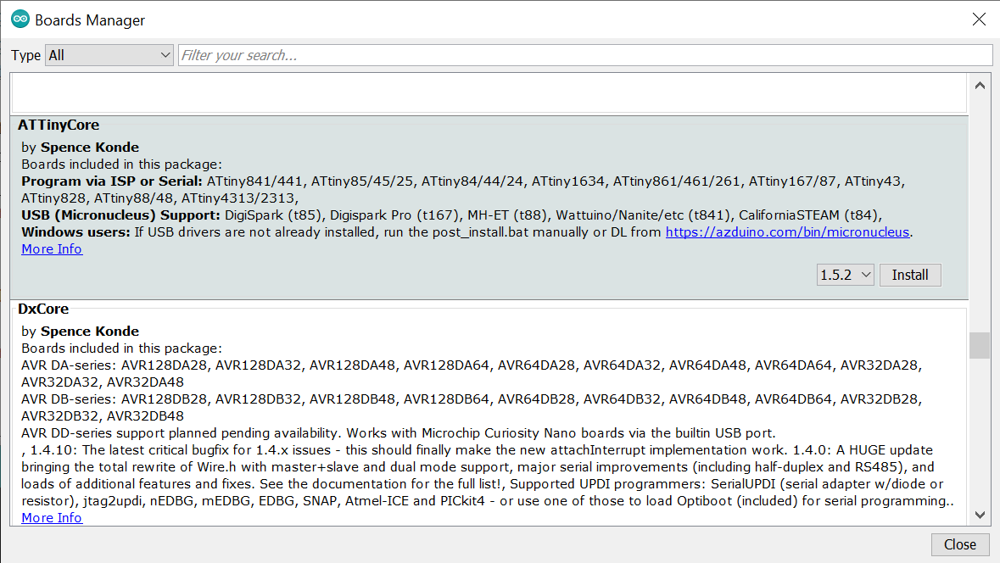
รูป: การติดตั้ง Arduino ATTinyCore สำหรับซอฟต์แวร์ Arduino IDE
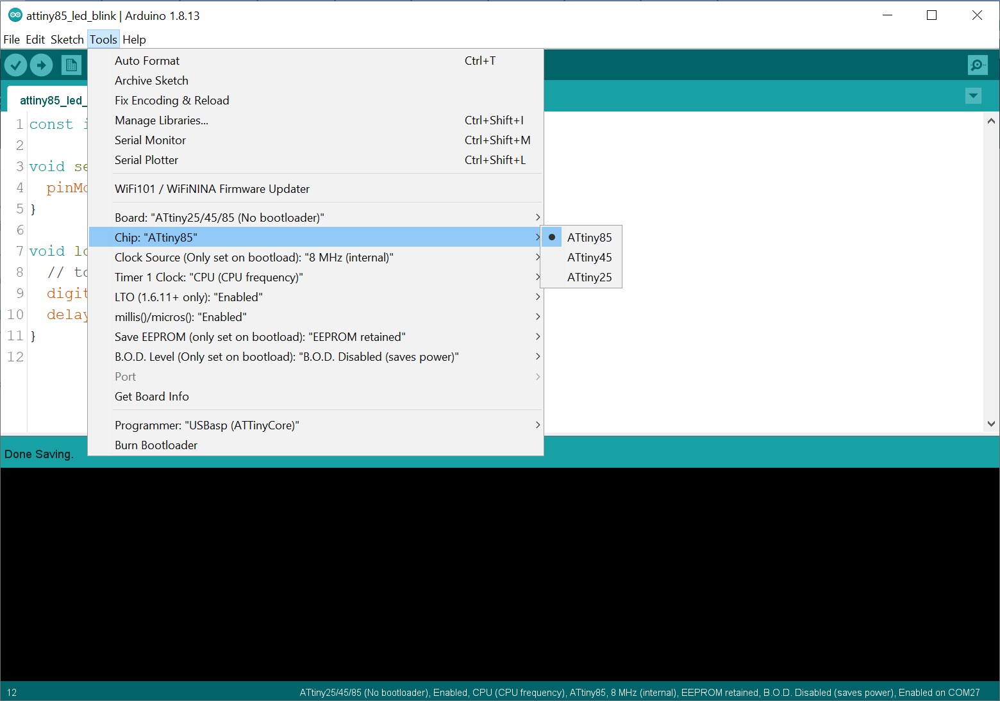
รูป: การตั้งค่าเพื่อคอมไพล์โค้ดตัวอย่างใน Arduino IDE เลือกชิป ATtiny85 ใช้ Clock Source: 8MHz Internal) และไม่ใช้งาน Bootloader
▷ การอัปโหลดโปรแกรมไปยัง ATtiny85#
เมื่อสามารถคอมไพล์ Arduino Sketch ได้แล้ว และต้องการนำไปทดลองกับ ATtiny85 จะต้องมีอุปกรณ์อีกหนึ่งอย่างคือ AVR ISP Programmer ซึ่งมีให้เลือกใช้งานหลายแบบ เช่น
- USBasp (Clone): อุปกรณ์นี้ใช้ชิป ATMEGA-8 พัฒนาโดย Thomas Fischl แต่ก็มีอุปกรณ์ประเภท Clone ที่ผลิตในจีน ดังนั้นจึงมีราคาถูกและหาซื้อได้ง่าย
- Arduino as ISP Programmer: ผู้ใช้สามารถนำบอร์ด เช่น Arduino Uno หรือ Nano (ถ้ามีอยู่แล้ว) มาติดตั้งโปรแกรมตัวอย่าง Examples > ArduinoISP ให้กลายเป็นอุปกรณ์ ISP Programmer ได้ และไม่จำเป็นต้องซื้อหาอุปกรณ์มาเพิ่ม
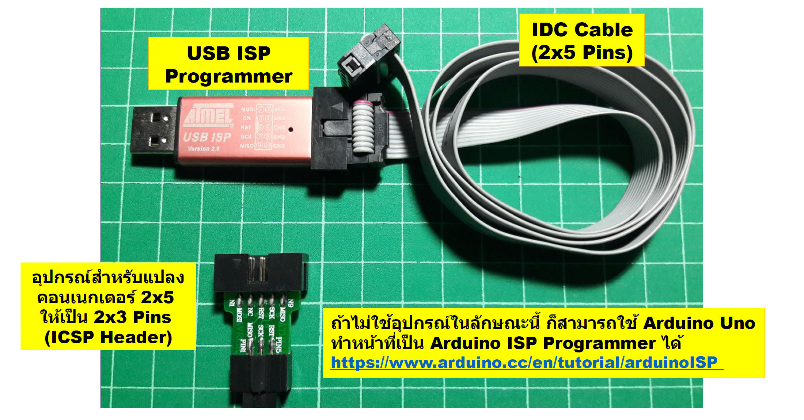
รูป: ตัวอย่างอุปกรณ์ USBasp (Clone)
การเขียนไฟล์เฟิร์มแวร์ลงในหน่วยความจำภายในชิป AVR โดยใช้อุปกรณ์ AVR ISP จะต้องมีการเชื่อมต่อสายไฟ 6 เส้น ดังนี้
- Pin 1: MISO
- Pin 2: VCC
- Pin 3: SCK
- Pin 4: MOSI
- Pin 5: RST
- Pin 6: GND
บอร์ด Arduino ที่ใช้ชิป AVR เช่น Uno, Nano, Mega มีคอนเนกเตอร์ แบบ 2x3 pins อยู่บนบนบอร์ด
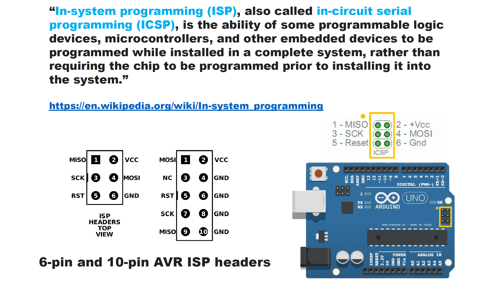
รูป: คอนเนกเตอร์ AVR ISP (2x3 pins) บนบอร์ด Arduino Uno
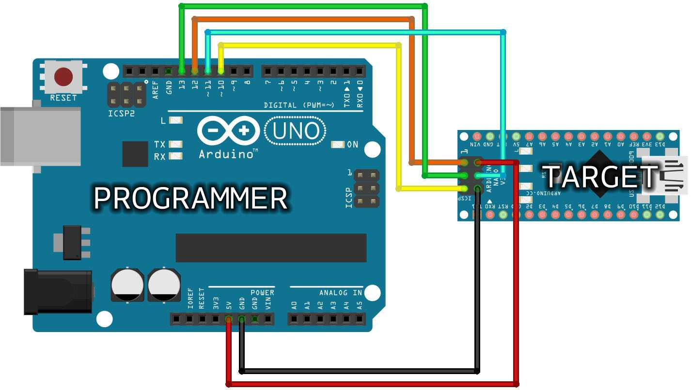
รูป: ตัวอย่างการเชื่อมต่อระหว่างบอร์ด Arduino Uno Rev.3 ที่ได้นำมาใช้เป็นอุปกรณ์ ISP Programmer เพื่ออัปโหลดเฟิร์มแวร์ไปยังบอร์ด Arduino Nano v3 (Target)
ถ้าใช้บอร์ด Arduino Uno เป็น ArduinoISP ขาที่ใช้งานมีดังนี้
- 5V = VCC
- GND = GND
- D13 = SCK
- D12 = MISO
- D11 = MOSI
- D10 = RESET
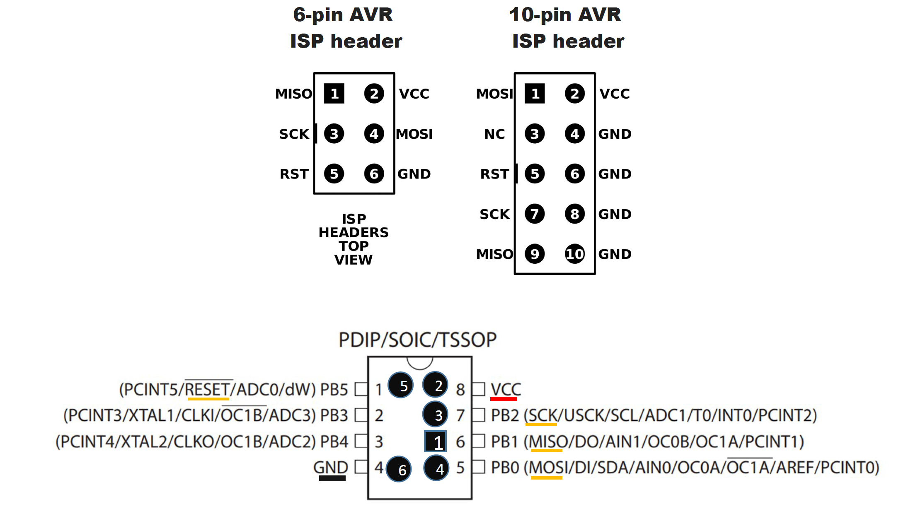
รูป: คอนเนกเตอร์ AVR ISP เปรียบเทียบระหว่าง 2x3 pins กับ 2x5 pins
การต่อวงจรโดยใช้ ATtiny85 บนเบรดบอร์ด จะต้องมีการเชื่อมต่อสายสัญญาณกับอุปกรณ์ ISP/ICSP Programmer เพื่อใช้ในการอัปโหลดโปรแกรม และสามารถใช้แรงดันไฟเลี้ยงจากขา VCC (+5V) กับ GND ของอุปกรณ์ดังกล่าวได้
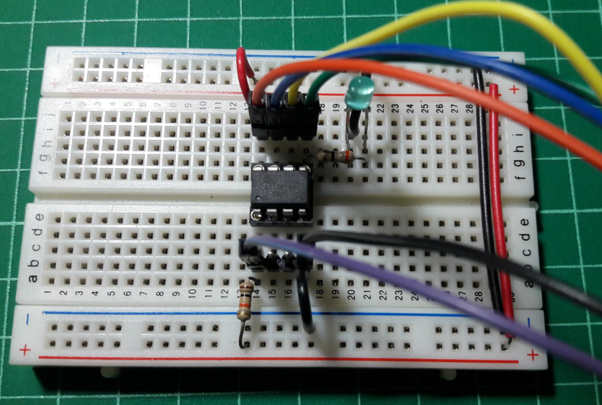
รูป: ตัวอย่างการต่อวงจรโดยใช้ชิป ATtiny85 บนเบรดบอร์ด และเชื่อมต่อกับอุปกรณ์ USBasp หรือ Arduino ISP
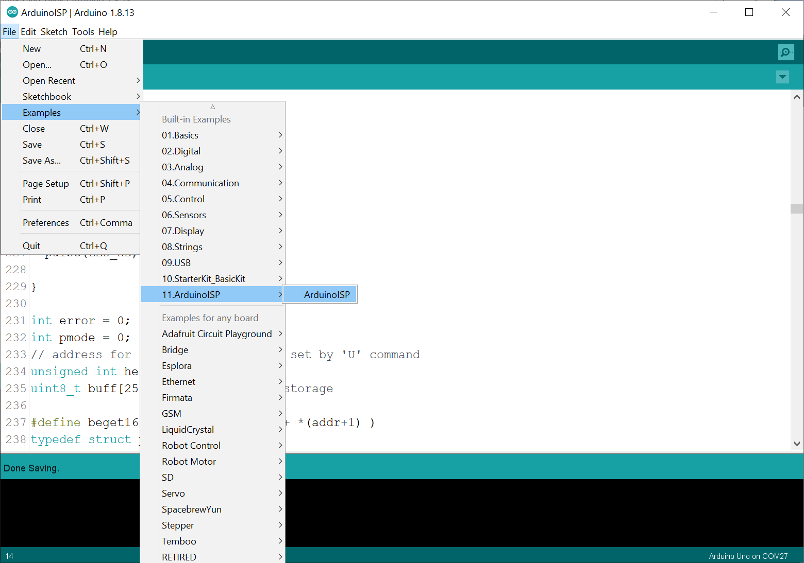
รูป: การคอมไพล์โค้ดตัวอย่างและอัปโหลดไปยังบอร์ด Arduino Uno เปลี่ยนเป็นอุปกรณ์ Arduino ISP
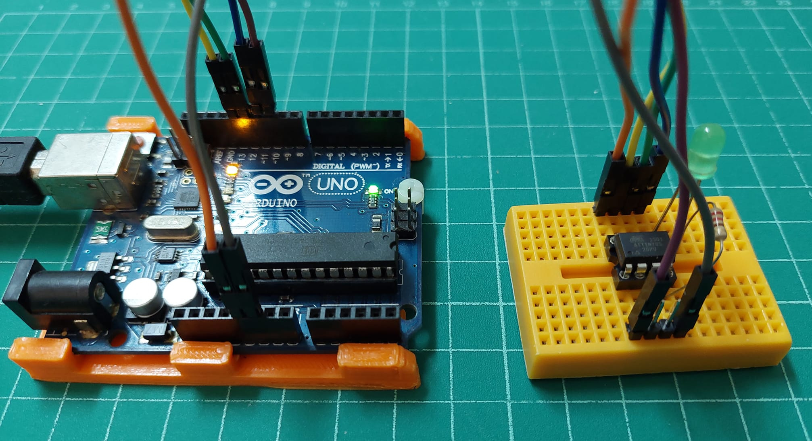
รูป: บอร์ด Arduino Uno ที่ถูกโปรแกรมและใช้งานเป็น Arduino ISP (ซ้ายมือ) และ ATtiny85 บนเบรดบอร์ด (ขวามือ)
ข้อสังเกต:
- ATtiny85 จะถูกโปรแกรมให้ทำงานด้วยความถี่ 1MHz (Internal) แต่ถ้าจะใช้ความถี่เป็น
8MHz (Internal) ให้ทำขั้นตอน Burn Bootloader โดยใช้ Arduino IDE / avrdude เพื่อเขียนค่า Fuse Low Byte ให้ถูกต้อง และเป็นการปรับค่าตัวหารความถี่ของ Clock Source
(
CKDIV8=0)
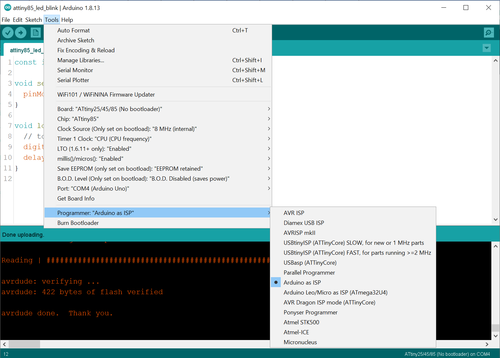
รูป: การอัปโหลด Arduino Sketch ไปยัง ATtiny85 (Target MCU) โดยใช้บอร์ด Arduino Uno เป็นอุปกรณ์ Arduino ISP
คำแนะนำ
- ให้ใช้ซอฟต์แวร์ Tinkercad หรือ Wokwi Simulator เพื่อเขียนโค้ดและจำลองการทำงาน ตรวจสอบความถูกต้อง จนมั่นใจแล้วว่าถูกต้อง จึงนำไปทดสอบกับอุปกรณ์จริง
- เมื่อต้องการอัปโหลดโปรแกรมไปยัง ATtiny85 ด้วยวิธี ICSP (โดยใช้อุปกรณ์ USBasp หรือ Arduino ISP) ซึ่งต้องใช้ขา I/O ที่เกี่ยวข้องหลายขา ไม่ควรต่อใช้งานขา I/O กับวงจรอื่นในขณะอัปโหลดโปรแกรม ดังนั้นควรแยกวงจรสำหรับอัปโหลดโปรแกรมจากวงจรที่ใช้งานในการทดลอง
- เมื่ออัปโหลดโปรแกรมไปยัง ATtiny85 ได้สำเร็จแล้ว จึงนำไปใส่ลงในวงจรสำหรับการทดลองที่ได้เตรียมไว้
▷ ตัวอย่างโค้ด: การอ่านค่าอินพุตแบบแอนะล็อก#
ถัดไปเป็นตัวอย่างการอ่านค่าจากช่องสัญญาณอินพุตแบบแอนะล็อก เช่น ขา PB2 / ADC1
โดยใช้คำสั่ง analogRead() ของ Arduino API ซึ่งจะได้ค่าที่เป็นเลขจำนวนเต็มขนาด 10 บิต
ในช่วง 0..1023 แล้วเก็บไว้ในตัวแปร value และนำค่าไปเปรียบเทียบกับค่าคงที่
เช่น ถ้าค่าที่อ่านได้มากกว่า THRESHOLD_VALUE จะได้ลอจิกเป็น 1 แต่ถ้าไม่ใช่ จะได้ค่าลอจิกเป็น 0
ผลลัพธ์นี้นำไปใช้กับเอาต์พุตที่ขา PB0 สำหรับวงจร LED
#define LED_PIN (0) // D0 or PB0 pin
#define ADC_PIN (A1) // A1 or PB2 / ADC1 pin
#define THRESHOLD_VALUE (511)
void setup() {
pinMode( LED_PIN, OUTPUT );
}
void loop() {
// read an analog value from the ADC pin
int value = analogRead( ADC_PIN );
// compare the analog input value with the threshold value
// and use the result to update output
digitalWrite( LED_PIN, value > THRESHOLD_VALUE );
delay(10);
}
หากต่อวงจรและจำลองการทำงานด้วย WokWi Simulator ก็สามารถเลือกใช้โมดูลที่ให้สัญญาณเอาต์พุตแบบแอนะล็อก เช่น
- โมดูลที่มีตัวต้านทานปรับค่าได้และต่อใช้งานเป็นวงจรแบ่งแรงดันไฟฟ้า (Voltage Divider)
- โมดูลเซนเซอร์แสงที่ใช้ตัวต้านทานไวแสง หรือ LDR (Light Dependent Resistor) ต่ออนุกรมกับตัวต้านทานให้เป็นวงจรแบ่งแรงดันไฟฟ้า
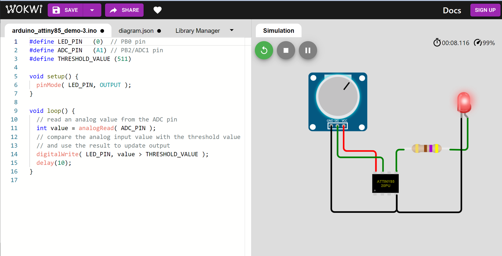
รูป: การอ่านค่าจากโมดูลที่มีตัวต้านทานปรับค่าได้
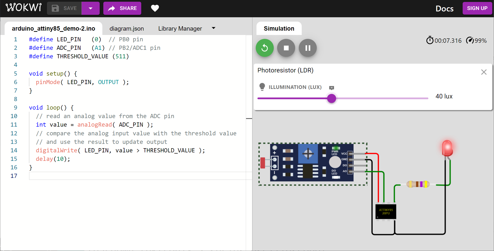
รูป: การอ่านค่าจากโมดูลเซ็นเซอร์แสงที่ใช้ LDR
ลองมาดูตัวอย่างโมดูลตรวจจับการเปลี่ยนแปลงความเข้มแสง โดยใช้ LDR ต่ออนุกรมกับตัวต้านทานคงที่ (เช่น 10kΩ) และให้เอาต์พุตแบบแอนะล็อก (ขา A0)
LDR จะให้มีค่าความต้านทานมากขึ้นเมื่อความเข้มแสงลดลง ในวงจรตัวอย่าง ถ้าแสงน้อยลง จะทำให้ได้เอาต์พุต-แอนะล็อกมีค่ามากขึ้น (ระดับแรงดันไฟฟ้าสูงขึ้น)
โมดูลนี้มีไอซี LM393 Voltage Comparator สำหรับเปรียบเทียบแรงดันที่ได้จากวงจร LDR กับแรงดันอ้างอิง (ปรับระดับได้โดยใช้ตัวต้านทานปรับค่าได้หรือ Trimpot) และให้เอาต์พุตแบบดิจิทัล (ขา D0)
โมดูลมีขาเชื่อมต่อดังนี้
- VCC (+5V)
- GND
- D0 (Digital output signal)
- A0 (Analog Output Signal)
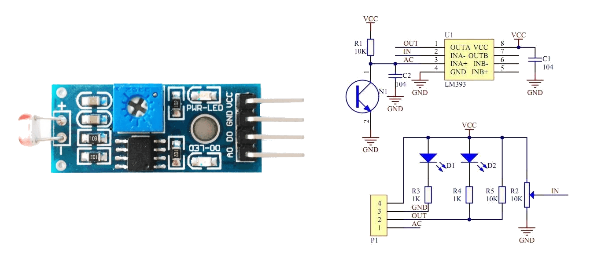
รูป: ตัวอย่างอุปกรณ์ Light Sensor Module ที่ให้เอาต์พุตทั้งแบบแอนะล็อกและดิจิทัล
จากโค้ดตัวอย่าง เราอาจจะปรับเปลี่ยนพฤติกรรมการทำงานใหม่ เช่น ให้สร้างสัญญาณ PWM (Pulse Width Modulation) ที่มีความถี่คงที่ แต่ปรับเปลี่ยนค่า Duty Cycle ได้
คำสั่งของ Arduino API สำหรับสร้างสัญญาณ PWM คือ analogWrite()
ใช้กับค่าที่เป็นเลขจำนวนเต็มในช่วง 0..255
#define LED_PIN (0) // PB0 pin
#define ADC_PIN (A1) // PB2/ADC1 pin
void setup() {
pinMode( LED_PIN, OUTPUT );
}
void loop() {
// read an analog value from the ADC pin
int value = analogRead( ADC_PIN );
// map the value from 0..1023 to 0..255
value = map( value,0,1023,0,255 );
// update PWM output
analogWrite( LED_PIN, value );
delay(10);
}
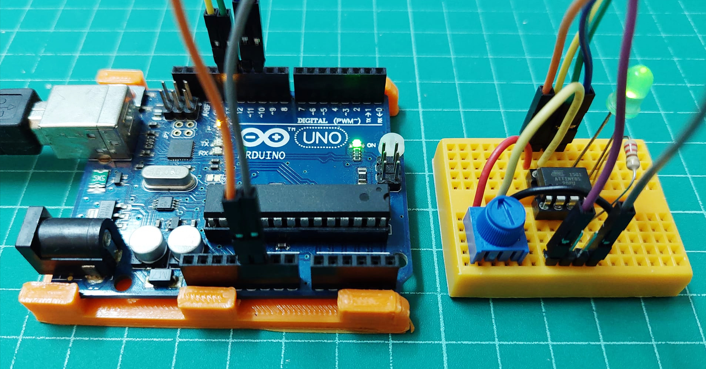
รูป: การทดลองต่อวงจรโดยใช้ตัวต้านทานปรับค่าได้ (Potentiometer) สร้างสัญญาณแอนะล็อกป้อนให้ ATtiny85
▷ กล่าวสรุป#
บทความนี้ได้นำเสนอการใช้งานไมโครคอนโทรลเลอร์ ATtiny85 ที่มีขนาดเล็ก ใช้ตัวถังแบบ DIP-8 สามารถนำไปต่อใช้งานบนเบรดบอร์ดได้ง่าย และสามารถเขียนโปรแกรมโดยใช้คำสั่งของ Arduino ได้ มีซอฟต์แวร์อย่างเช่น Tinkercad Circuits และ Wokwi Simulator ที่สามารถจำลองการทำงานของโปรแกรมได้เสมือนจริง ดังนั้นผู้ใช้สามารถทดสอบการทำงานของโค้ดก่อนที่จะนำไปใช้กับอุปกรณ์จริง
เอกสารสำหรับศึกษาเพิ่มเติม: Arduino_ATTiny85_Coding.pdf
This work is licensed under a Creative Commons Attribution-ShareAlike 4.0 International License.
Created: 2022-06-11 | Last Updated: 2022-06-12